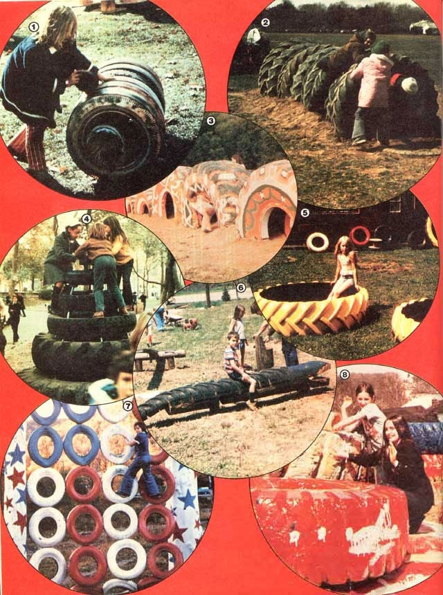
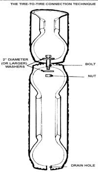
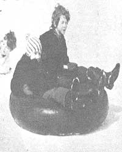

You don't have to spend hundreds of dollars on sterile, mass-produced recreational equipment.Take Paul Hogan's advice instead
1979 is the International Year of the Child, and you could hardly do the tykes and teens in your community a better service than to provide them with a joyful place to sport and cavort. A playground needn't require scads of expensive prefabricated equipment, either, because you can build a better recreation set than commercial manufacturers offer . . . using discarded auto and truck tires! Millions of the worn-out "road riders" become junked giveaways every year . . . so why not work with your fun-loving youngsters (and recycle a bit of America's trash in the bargain) to construct your own super-fantastic, whale-of-a-time, free playground?
Please note that I just said you should work WITH the children. I started designing "outdoor rumpus rooms" years ago, and have since helped over 250 communities-from Ottawa to Tennessee-create their own playgrounds. The successes and failures I've experienced in these projects have taught me one vitally important lesson: Never build playgrounds without the total involvement of the children who will be using them!
There are several good reasons for "employing" youthful design and construction crews. For one thing, young people should be allowed to help develop their own play space. After all, most adults enjoy laying out a vegetable patch or redesigning their own homes . . . and young folks can have a lot of fun helping to shape their own "environments", as well. (Remember, too, that one meaning of the word recreation is "the act of building anew".)
In addition, your pre- and post-pubescent planners will make sure the finished structure is built to "scale", and that it includes playthings the children themselves will want to use. All too many professionally designed playgrounds go un-enjoyed because they simply don't appeal to young'uns!
More important, though . . . "offspring architects" may be necessary for a playground's survival. When outdoor fun sites are designed and put up by adults, children will often "re-create" the parks in the only way they can . . . by destroying them! If these same individuals have their hands in the planning and development of the game ground, however, the juveniles will want to maintain-maybe improve-their structures . . . rather than damage them.
Once you corral some "constructive" youngsters (this should be an easy task, as most children will be eager to help!), all you'll lack is your raw material: tires. Fortunately, an almost infinite number of old highway handlers can be had just for the scrounging.
What's more, big truck or tractor castoffs are just as easy to secure-and "just as free"as are the smaller automobile wheel coverings. In fact, you can even get huge pneumatics (tires that often cost over $10,000 new) delivered to your playground! Simply phone your local quarry, road builder, or state highway department and convince the folks at these business offices to donate their casings to a worthy cause . . . the area's children.
Remind the firms' owners that they can take a tax write-off by giving their play objects to your community association or school . . . and probably save a dumping fee, besides. Chances are such business people will like your idea so much they'll thank you for asking! Then-if you pick a spot or dig a hole for each tire before the big delivery-the donors will likely unload the rejected rubber giants right where you want 'em!
After you've garnered a collection of large and small tires, you're ready to let your-and the youngsters'-imagination run loose. To get you started, I'll show you some structures I've built with other playground people. Perhaps our ideas will motivate the "think tanks" in your group . . . then you can invent some really zany recreation ideas and pass them on to me!
Photo 1: Canadian Log Roller. These rubber balance "logs" are child's play . . . to make and to use! Just drill three equidistant holes through the sides of a bunch of "matching" tires (we've strung together as many as 10 of 'em!), and connect the casings with nuts and bolts. Be sure, though, to add extra wide washers on both sides of your hookups . . . to keep the tires from tearing and separating. (In fact, install large washers whenever you bolt "wheel bracelets" together, and always cut drain holes-in the lower portions of your casingsto allow rainwater to run out.)
Many small fry play with the log by having one person ride inside while two or more children try to roll-and stay on top of-the rubber cylinder. This enjoyable game has only one official rule: When the tot inside hollers "stop", the others must pause to let the well-spun youngster out.
Photo 2: Tire Tunnels. Just about every child loves to crawl through tunnels, so most playground builders plop a few concrete culverts somewhere on the lot. The huge pipe just doesn't make as good a tunnel as does a set of large-hole farm tractor tires, though: Precast culverts are a lot of trouble to move into place, andmore important-are much less safe than are their softer counterparts. (Which would you rather bump your head against . . . concrete or rubber?)
To make a tire tunnel, dig a big trench and line the ditch with some drainage material (such as gravel or sand). Roll your big rounds in place (drain holes down) and bolt the tires together, using two-inch-diameter (or larger) washers. Then backfill and tamp-some dirt in the bottom of your passage to provide a level "floor" and to keep the structure from rolling.
When I help folks build tire tunnels, we're always careful to pave the inside of the tube with used conveyor belting that we obtain-for freefrom manufacturing companies. We anchor this knee protecting material-just outside the tunnel's ends-by nailing it to buried wooden railroad ties or "sunken" pieces of utility pole. Rubber belting also makes a good safety surface for many other playground spots. You can lay it under swings and climbers, or any place where the children might hit a hard surface or perhaps wear the ground away.
Photo 3: Tire Caves. You can also partially bury tires to set up a series of hoop caves. The circular grottoes will give off eerie echoes when a child talks or hollers inside . . . and make some "hilly" climbing for those who'll want to clamber along the top. The youngsters at the school where these caves are located were responsible for the dens' fancy paint jobs. Furthermore, the artistic "little folk" don't just rest on their rubber laurels . . . they redecorate the caverns every year! (By the way, it's best to use water-based paint on tires. For some reason, oil-based coats have trouble drying!)
Photo 4: Tire Tipi. This casing "conestead" is a lot of fun to build and play on. We make our tipis three or four rounds tall for little tykes, and as big as possible for the "older" people. You can construct spaces between the tire layers by setting metal sleeves and washers on 6- to 12 inch galvanized fastening bolts. The gaps will make the tipi taller, easier to climb. . . and "springier" as well.
A tire tipi can be built-by a crew of three people-in a few hours. Once the structure is finished . . . each round plays the part of a coil on a giant spring, so the whole apparatus can rock excitingly to and fro like a sailboat in a heavy sea. (And don't worry about the cone tipping over. I once challenged 10 teenagers to upset a tire tipi, and those strapping adoles cents couldn't do it. Well . . . at least not until they "cheated" by lassoing the top with a long rope and tugging on it for all they were worth!)
Photo 5: Sandbox. The tractor-tire sandbox is an old idea, but we've updated the concept some by cutting off one side of the casing to give the play circle more open space. (A dry-wall cutter-or any sharp razor-type knife-makes a fine tire-trimming tool.) And don't forget to drill drain holes in the "pneumatic's" lower side . . . or your sandbox may turn into a quicksand box.
Photo 6: Rubber Alligators. If you'd like to give your playground a touch that every young Tarzan will love, just make a "threadbare" alligator out of an old tractor tire . . . and nail the rubber hide to a low log bench. Young folks can then pull Ally's tail all day . . . "without getting eaten once". We used a chain saw to cut out the reptile's jaws, but that tricky task should only be attempted by someone who's expert at handling the dangerous tool.
Photo 7.: Tire Climber. It's easy to build an obstacle-course climber. . . if you erect it one row at a time (nobody could lift the whole thing!). Just remember the old tire rules: Use large washers to keep the rubber from tearing, and always drill drain holes. The children who worked on this climber wanted to "salute America". . . so they turned their "rubber curtain" into a tire flag!
Photo 8: Miscellaneous Tiretry . This last shot illustrates people painting tires, but -more than that-it displays folks working with a lot of casings . . . which gives me a chance to proclaim Hogan's Pneumatic Principle: The use of tires is limited only by the number available.
I'm not kidding, either! Tires can be stacked into mountains (or hide-and-go-seek mazes) ... built into dome-shaped jungle gyms . . . fastened along the sides of posts to make "trees" . . . suspended as bridges . . . "sculpted" into play cars or boats ... made into hammocks ... laid out as roly-poly walkways . . . and more, more, more! And-as you may have noticed-I haven't even mentioned swings! It would take another whole article to describe the many great designs for rim-riding "swaythings".
So please, don't let a lack of funds stop you from helping your youngsters have a great place to play. (And don't let a surplus of moneys lure you into buying outdoor equipment, either.) Because with a little bit of scrounging-and a lot of inventive young volunteers-you can put together a playground children will never get "tired" of!
EDITOR'S NOTE: Paul Hogan manages Playground Clearing House, a non-profit corporation that offers everything from consultant services to swivel sets. The organization is an excellent resource for budding "playgroundists". Paul also publishes the fine 16-page bi-monthly magazine, PLAYPLANS ($6.00 a year) . . . offers a $2.00 sample playground information pack (consisting of a 16-page catalog, informative flyers, and a sample copy of his magazine) . . . and has written the 252 page book Playgrounds for Free: The Utilization of Used and Surplus Materials in Playground Construction ($9.95 plus $1.00 shipping and handling). To get hold of the industrious Mr. Hogan or any of his materials, write Playground Clearing House, Dept. TMEN, 26 Buckwalter Road, Phoenixville, Pennsylvania 19460.
Another worthy roadrider sourcebook is Christopher Clews' The Intire Story: Play Structures You Can Build. Chris's handsome 24 page publication contains a great deal of specific tire building know how. . . as well as some amazing plans for recycled-rubber structures . You can buy The Intire Story for $2.95 (plus 40 cents shipping and handling) from Learning Structures, Inc., Dept. TMEN, 799 South Street, Portsmouth, New Hampshire 03801 . Mr. Clews has also just finished his Adventure Garden Manual ... a do-it-yourself book which is filled with 40 different playground building projects (geared toward structures for three- to eight-year-old "recessers"). This guide is also available from Learning Structures for $2.50, plus 40 cents shipping and handling.
Whenever you and your troops head out on a tire "scavenger hunt", be sure to snatch up all the used inner tubes you find along the way. Many of the deflated "doughnuts" you discover probably won't hold air. . . but don't fret: Simply select tubes with leaks that can be repaired. Once you fix and inflate those punctured "air holders", they'll provide your young'uns with hundreds of ways to have fun . . . just as tires do!
Bigger children can, for instance, let off a little steam-harmlessly-by having inner tube "pillow fights".. . or by climbing into truck tubes and trying to roll down a hill. For your younger charges, just set a "net" of the easily stored inflatables on the ground. The little tykes will jump at-and all over-this chance to practice their "trampolining" The tots can also take their storytime rests in the airy cushions.
Inner tubes are even good for winter games. In fact, the pneumatic doughnuts make especially great sleds because nobody gets hurt in a collision!
So haul a passel of "tubes" out to a playground, then let the youngsters have at 'em! The former tire fillers will suddenly become bumpers, back stops, safety nets, "giant ring toss"hoops . . . and more. You'll be astounded by the clever uses children can create for these flexible "toys". Why, one young fellow claimed that he even played with an inner tube while he was swimming!
Of course, that idea did seem a bit far-fetched . . . .
|
 |
 |
 |